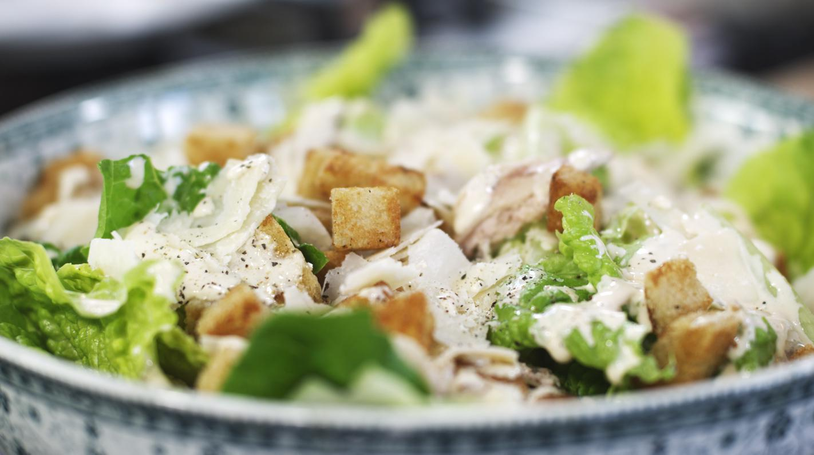

Caesaersalade.

Ingrediënten voor 4 personen.
- 4 kippenbillen
- 2 eieren
- 2 teentjes look
- 1 halve limoen of citroen
- 1 eetlepel
- mosterd
- 15 cl arachideolie
- 1 dl natuuryoghurt
- cayennepeper
- Engelse saus (Worchestershiresaus)
- 3 zoute ansjovisfilets
- 1 krop Romeinse sla
- 1 ongesneden toastbrood
- klontjes boter
- olijfolie
- 100 g Parmezaanse kaas in blok
Bereiding.
-
Kook de kip gaar in een bouillon. Je kan ook (de resten van) een
gebakken kip gebruiken.
-
Scheur het afgekoelde kippenvlees in hapklare brokken en zet ze even
opzij.
-
De Caesardressing is een variatie op de klassieke mayonaise. Breek de
eieren en doe enkel de dooiers in een hoge mengbeker. Het eiwit
gebruiken we niet.
-
Pel de look en snij de teentjes in kleine stukjes. Voeg ze toe aan het
eigeel in de mengbeker.
-
Knijp de limoen (of citroen) uit in de beker en voeg er de mosterd aan
toe.
-
Plaats de staafmixer in de pot en schenk al mixend de arachideolie toe,
tot je een stevige mayonaise krijgt.
-
Schenk yoghurt bij de mayonaise en mix alles tot een romige dressing.
-
Voeg de zoute ansjovis toe, een voorzichtig snuifje cayennepeper en
enkele druppels worcestershiresauce (Engelse saus). Mix alle
ingrediënten in de dressing. Proef en voeg naar smaak nog wat extra
ansjovis of kruiding toe. Zet de dressing even koel.
-
Scheur de bladeren van de Romeinse sla in grove stukken en was ze in
veel koud water. Laat de sla goed uitlekken.
-
Snij met het broodmes enkele dikke sneden van het toastbrood van
ongeveer 2 cm dik. Verwijder de korst en snij het brood in dobbelstenen.
-
Verhit een klontje boter en een scheutje olijfolie in een pan. Zodra het
braadvet heet is, bak je hierin de dobbelsteentjes brood tot goudbruine
knapperige croutons. Blijf bij de pan, want het gaat snel!
-
Leg een vel keukenpapier in een diep bord, en laat de warme croutons
hierop uitlekken
- Vul een grote slakom met de gescheurde blaadjes Romeinse sla.
- Schik hierop de stukjes kip en de croutons.
-
Schenk er enkele flinke lepels Caesardressing over en werk de sla af met
schilfers van het blokje Parmezaanse kaas.
Homepage